| |
Mini Midwest Trip 2018
Cedar Point Kentucky Kingdom Holiday World Kings Island
All right. Time for another Incrediblecoasters Trip. Now, this is a smaller trip than we normally do. But to be fair, this is not only only trip, as we have two more trips this year, including the jackpot trip I've been trying to do for years (Japan is finally offically happening. It's all booked). But looking at Steel Vengeance, I knew that I had to find a way to also get to Cedar Point this year. So this trip went through so many different variations, with several different people. Hell, this was even considered a road trip for a brief amount of time, before that couldn't happen since...driving to Cedar Point is time-consuming, and...I've taken enough time off (You tend to take a lot of time off when you do 3 trips), and had to keep this short. And plus, when I saw that other friends were doing a similiar trip right around the same time I was going anyway, I joined them. And all right. We have all day before our Redeye Flight. So...here's some bonus pre-airport fun with us checking out the Van Eaton Galleries in L.A.
Mary Poppins bread! It's Supercalifragilisticexpialidocious! And it only contains a spoonful of sugar (OK. More like 10 spoonfuls, but who cares! It's freaking Mary Poppins Bread!). ;)
We still have plenty of time to kill before getting to LAX. Hmm. I wonder why we stopped at Universal Citywalk? What have they added that I've really been wanting to try?
Yep. We're finally trying out Voodoo Doughnuts. I got two doughnuts to try (Oh, tip word of caution. The doughnuts are really cheap, but if you're thirsty and want a coke, WATCH OUT!!! That's where they get you. Don't learn the hard way like me).
 First off, the Voodoo Doll. As a doughnut, it's all right. Basically, take a generic chocolate bar, and turn it into a JELLY DOUGHNUT, and that's basically how it tastes. Good, but not my favorite doughnut. However, this doughnut is just so fun to eat. I love the theme of it. I love the way it looks. I love the way it comes with a pretzal stick that you use to STAB your voodoo doll, and make it bleed. I love eating off its limbs, before I decapitate it. Oh, who to make the voodoo doll!? Such a tough choice.
First off, the Voodoo Doll. As a doughnut, it's all right. Basically, take a generic chocolate bar, and turn it into a JELLY DOUGHNUT, and that's basically how it tastes. Good, but not my favorite doughnut. However, this doughnut is just so fun to eat. I love the theme of it. I love the way it looks. I love the way it comes with a pretzal stick that you use to STAB your voodoo doll, and make it bleed. I love eating off its limbs, before I decapitate it. Oh, who to make the voodoo doll!? Such a tough choice.
And I also tried the Grape Ape, since that one always caught my eye. It's basically like those raised Vanilla doughnuts with sprinkles. Classic that I always enjoy. Except for a couple things. #1. All the sprinkles are purple, fitting. And #2. What makes this the Grape Ape and not just the Purple Ape, is the fact that the doughnut is also covered in grape Koolaid dust. Damn. I love that. The grape dust really gives it a nice kick. You're enjoying the doughnut, tastes like a regular...BAM!!! Grape bite! And considering that I love the dust anyway, I was very happy to have it on the Grape Ape. I will be back as there are so many more flavors for me to try.
All right. Time for us to fly out to Cedar P...Detroit!?
 Why the f*ck are we heading to DETROIT of all places?
Why the f*ck are we heading to DETROIT of all places?
Spirit Airlines. We're so cheap that you have to resort to your freaking boarding pass for in flight entertainment.
Ahh. Nothing says "Welcome to Detroit" by walking right by an abandoned and closed Dennys right upon arrival.
Well, here's the main reason we flew out to Detroit.
All right. So as I mentioned, this trip went through a million rewrites, and Michigan's Adventure was briefly considered before the plan was to just scrap Michigan all together. But a couple friends REALLY wanted to still do the Henry Ford Museum and Greenfield Village. So we figured that we could just fly into Detroit instead of Cleveland, and do those before heading down to Cedar Point.
This should be fun for a couple hours.
For you assholes too lazy to walk, we have a train to carry you around.
You know, if we're gonna fly all the way out to Detroit, I feel like we should take some time and get to know the locals while we're here.
Hmm. I wonder what they're hiding in there?
Hey. The accomidations on this trip are really good. =)
Make it a unicycle or I'm not interested.
Welcome to Pioneer Village! =P
Hello. I not only didn't pioneer anything, but I'm also a huge asshole.
I know this invention was important and all, and it's great that this was the first invention that recorded sound. But my god. This woman's version of "Mary Had a Little Lamb" was so bad, it made me want to destroy it, so that there would be no copies of that terrible rendition left in this world. >=)
How much of that did you really invent?
What museum are we at again?
TAKE THE TUNNEL!!!
You know, I generally associate windmills with more old school European cities. Not old school American villages.
This is what people in Detroit do for fun around here.
Anyone wanna pay extra for the carousel here, even though we're on a theme park trip and all 4 parks we're visiting have carousels included with admission?
Let's see what sort of food they ate in the 1800s.
Meh. It's good, but the 1800s has better food at Silver Dollar City (I wish I was going there this year).
 All right. Now let's actually check out the Henry Ford Museum itself.
All right. Now let's actually check out the Henry Ford Museum itself.
Please bring this back to L.A. We need that golden age so f*cking badly!
Trust us. If you've read this site, then you'll know that we know quite a bit about vacation. ;)
Still a more comfortable flying experience than Spirit airlines.
"Oh, I wish I drove an Oscar Mayer Weiner!"
 What do you mean almost?
What do you mean almost?
Come on Evan! We need more power!
"Hey look! A...never mind."
Train enthusiasts rejoice.
All right. That's enough Henry Ford Museum. Time for the real reason we went on this trip to begin with.
Yep. We have finally returned to Cedar Point. Considering that our last visit was 11 years ago, we're long overdue to come back here.
That name is misleading. Cedar Point is not on the ocean. It's on Lake Erie, which is a lake. If you wanna be accurate, call it "Lake Wake". That's a fitting name for a pirate ship. ;)
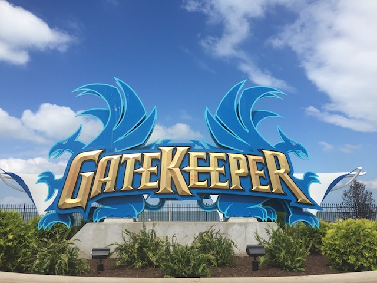
Let's start out our time at Cedar Point hitting up one of the coasters they've added since my last visit, Gatekeeper.
Don't worry. That line isn't nearly as long as it looks.
 I'm hoping that this one of the better B&M Wingriders.
I'm hoping that this one of the better B&M Wingriders.
 Gee. I know a certain ride at a certain homepark that would really benefit from this instead of that stupid locker policy that just pisses guests off *cough* X2 @ SFMM *cough*. ;)
Gee. I know a certain ride at a certain homepark that would really benefit from this instead of that stupid locker policy that just pisses guests off *cough* X2 @ SFMM *cough*. ;)
 I'm happy to report that this is easily the best B&M Wingrider for one simple reason. The restraints don't constantly tighten throughout the ride. B&M FINALLY FIXED THE PROBLEM!!! IT'S A MIRACLE!!!
I'm happy to report that this is easily the best B&M Wingrider for one simple reason. The restraints don't constantly tighten throughout the ride. B&M FINALLY FIXED THE PROBLEM!!! IT'S A MIRACLE!!!
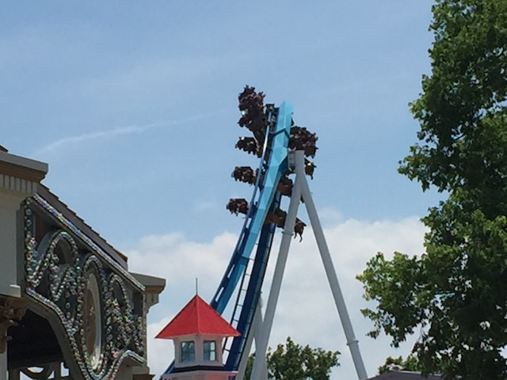
Being able to breathe aside, it's pretty similar to the other Wingriders. Very floaty, very dependent on inversions, got a pretty view of Lake Eerie. Kind of bigger than the other Wingriders, but that honestly doesn't make much of a difference.
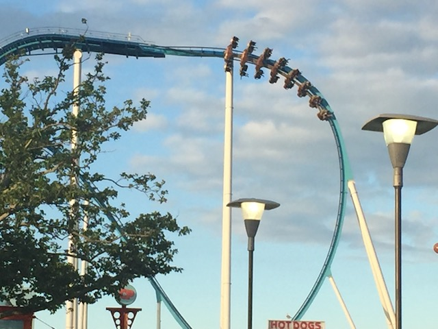
You know, I kind of liked those Dive Drops. I enjoy slowly turning upsidedown before dropping to the ground. Fun element. =)
Sorry guys. Not a fan. Again, sorry.
 Next coaster of the trip. Wicked Twister.
Next coaster of the trip. Wicked Twister.
It seems like whenever I visit, no matter what, Wicked Twister never seems to have a long line. I like that.
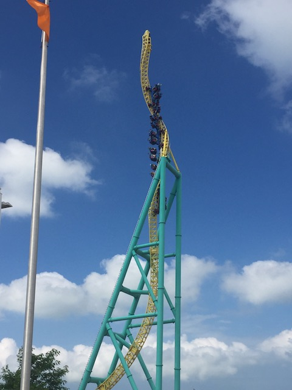
I really like Impulse coasters, and considering that this one is both bigger, and has a back spiral as well, I have a soft spot for Wicked Twister.
 Seeing the park and beach of Lake Erie spiraling away, that's pretty cool.
Seeing the park and beach of Lake Erie spiraling away, that's pretty cool.
 Oh boy! Time to get another credit!
Oh boy! Time to get another credit!
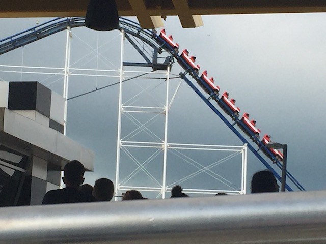
OK. The lifthill and the first drop just looks like a giant triangle. Please tell me that I'm not the only one seeing that.
 I was expecting complete sh*t. But not only did it not try to kill me, but it had a fun pop of airtime.
I was expecting complete sh*t. But not only did it not try to kill me, but it had a fun pop of airtime.
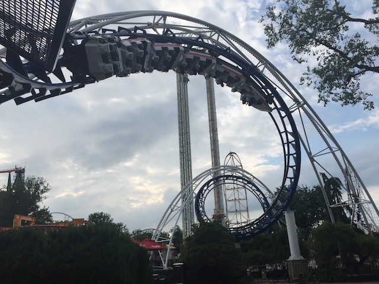
And it's very pretty going over the midway. Congratulations Corkscrew. You have exceeded my low expectations. Happy I got the credit this time.
 Figures that our next ride would also be another Arrow with triangle hills.
Figures that our next ride would also be another Arrow with triangle hills.
Yeah. Magnum definetly deserves that.
 But hey. This is a really fun ride. Definetly the better of the Arrow Hypers (Sorry Desperado).
But hey. This is a really fun ride. Definetly the better of the Arrow Hypers (Sorry Desperado).
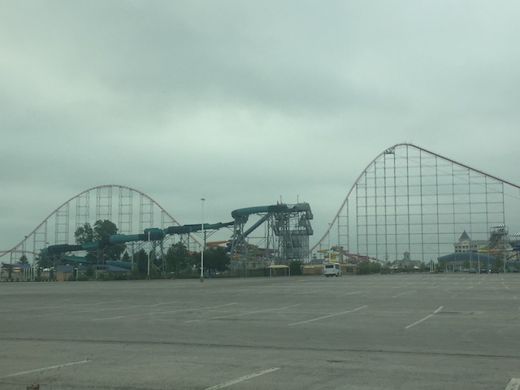
The rest of Magnum is fun and all, but the return airtime hills in the 3rd row, F*CKING BRUTAL!!! AND I LOVE IT!!!
 How's it going guys?
How's it going guys?
 We're really on a roll with the Arrow rides right now.
We're really on a roll with the Arrow rides right now.
 Holy Crap! I totally forgot about just how much fun this ride is!
Holy Crap! I totally forgot about just how much fun this ride is!
 Not only is it a fun ride, but we got to have ourselves a legit coaster race! You know those coaster races I portray in my reviews of any racing coaster, where I act like an overcompetitive jackass for fun. Except we actually did this in real life. And best of all, WE WON!!! WE WON THE COASTER RACE!!! IN YOUR FACE LOSERS!!! =P #TeamLongHair
Not only is it a fun ride, but we got to have ourselves a legit coaster race! You know those coaster races I portray in my reviews of any racing coaster, where I act like an overcompetitive jackass for fun. Except we actually did this in real life. And best of all, WE WON!!! WE WON THE COASTER RACE!!! IN YOUR FACE LOSERS!!! =P #TeamLongHair
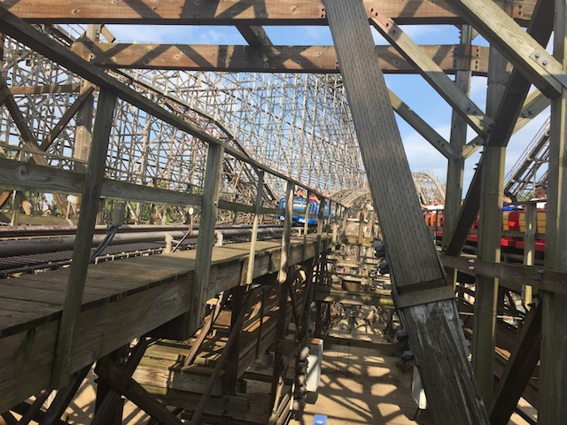
I'm totally putting this in my Top 10 Underrated Coasters List. Kind of embarassed that it wasn't already there. I guess I just forgot how much fun Gemini is and had to be reminded of it. So yeah. Even I underrate this ride. ;)
 All right. The rest of the rides are fun, but let's go after one of the Intamin giants here.
All right. The rest of the rides are fun, but let's go after one of the Intamin giants here.
 If speed and heights are your thing, then Top Thrill Dragster is your ride.
If speed and heights are your thing, then Top Thrill Dragster is your ride.
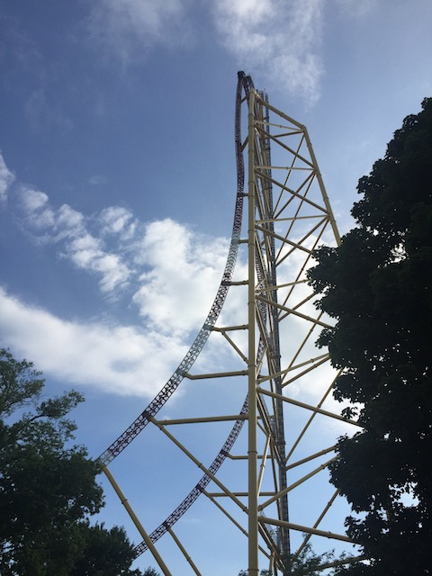
I know I live right by SFMM and am so used to Superman: Escape from Krypton. But not even that compares to just having Top Thrill Dragster loom above you.
 LIGHT SPEED!!!!
LIGHT SPEED!!!!
Anyone else wanna head outside the park and check out Famous Daves?
 Hello Marina on Lake Erie.
Hello Marina on Lake Erie.
 Don't worry about that Cedar Point. You don't need to clean that lamp off.
Don't worry about that Cedar Point. You don't need to clean that lamp off.
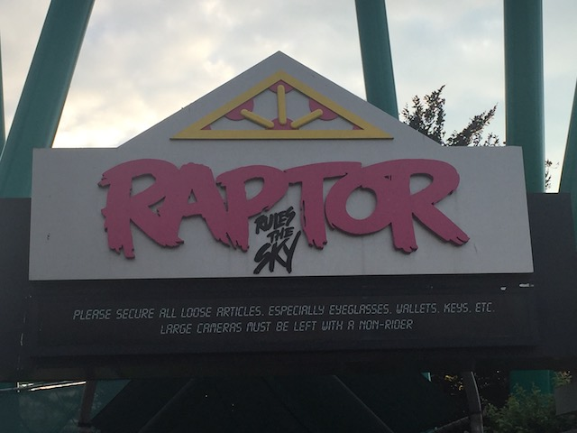
All right. Let's get back to rides. And we've got a good one to go to.
 Lines at Cedar Point are awesome right now.
Lines at Cedar Point are awesome right now.
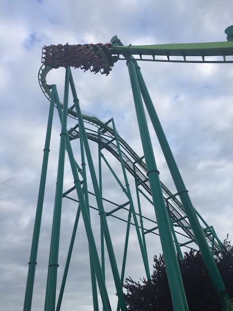
Yep. We're at Raptor, one of the more intense B&M Inverts, which obviously means better. =)
 Seriously, it just ROARS through all those inversions, with no place to catch your breath.
Seriously, it just ROARS through all those inversions, with no place to catch your breath.
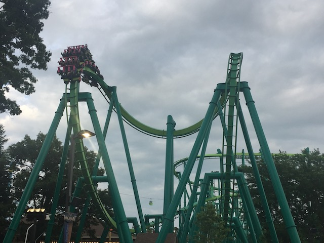
Very snappy cobra roll.
 Please ignore that bit of straight track in the 2nd half, cause otherwise, we keep the aggressive streak going!
Please ignore that bit of straight track in the 2nd half, cause otherwise, we keep the aggressive streak going!
 Hi! I'm still here! Been here since 1964! Don't you forget about me now!
Hi! I'm still here! Been here since 1964! Don't you forget about me now!
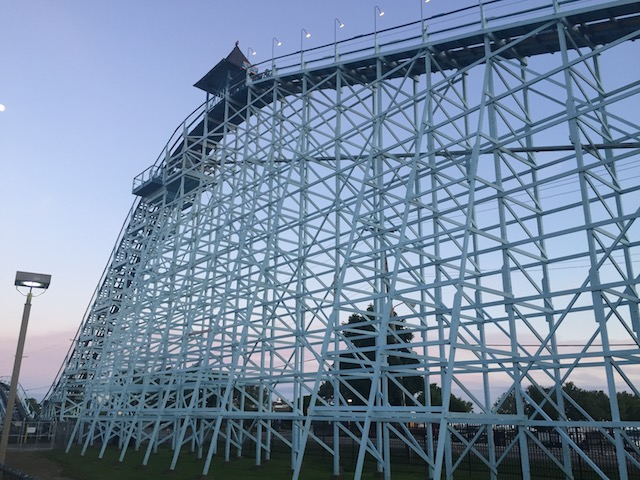
Though seriously. I know Cedar Point has so many amazing coasters, but Blue Streak really is a fun one.
 You actually get some decent airtime on this ride. =)
You actually get some decent airtime on this ride. =)
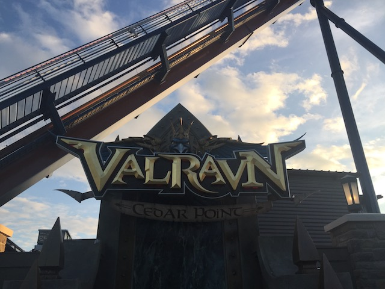
I think there was another B&M that Cedar Point added since my last visit. I wonder what that could be.
 Oh yeah. Cedar Point added a B&M Dive Machine.
Oh yeah. Cedar Point added a B&M Dive Machine.
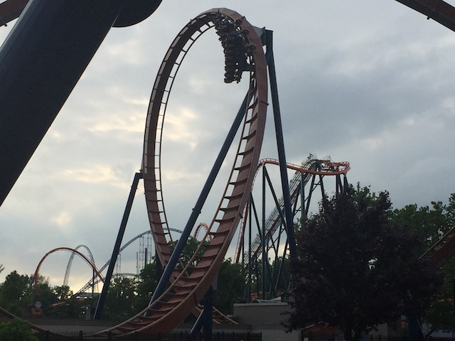
And this isn't one of those Mini-Dive Machines that have been really popular recently, like Krake. No, this is a full sized, Sheikra style Dive Machine.
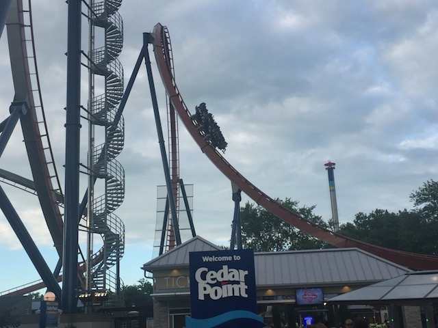
In fact, this is the biggest Dive Machine of them all. And it's also got the most inversions, being the only Dive Machine with 3.
 I know that this should be the best B&M Dive Machine, given how much more stuff it has. But, I do prefer Sheikra (Obviously, it's better than Krake). It's got a really cool layout. But there is one thing that makes me give the edge to Sheikra.
I know that this should be the best B&M Dive Machine, given how much more stuff it has. But, I do prefer Sheikra (Obviously, it's better than Krake). It's got a really cool layout. But there is one thing that makes me give the edge to Sheikra.
 Vest restraints. Yep, it uses the same vest restraints that B&M usually reserves for their Flyers and their Wing Riders. While I've complained about the tightening problem the early Wing Riders used to have, I haven't really talked about the restraints in general. Since, I generally don't do that. But yeah. Let's talk about the vest restraints. They're fine for Flyers and Wing Riders. But on a Dive Machine, you wanna lean foreward. You want some room to move. Cause these restraints, even when not trying to choke you, they definetly hug you. It's like you're being hugged the entire ride. So on a dive machine, it kind of takes away a little bit of the intimidation factor. Not enough to enjoy it. I still really like Valravn, it's just that with the old restraints, throw in some cool African theming, and Sheikra gets the edge.
Vest restraints. Yep, it uses the same vest restraints that B&M usually reserves for their Flyers and their Wing Riders. While I've complained about the tightening problem the early Wing Riders used to have, I haven't really talked about the restraints in general. Since, I generally don't do that. But yeah. Let's talk about the vest restraints. They're fine for Flyers and Wing Riders. But on a Dive Machine, you wanna lean foreward. You want some room to move. Cause these restraints, even when not trying to choke you, they definetly hug you. It's like you're being hugged the entire ride. So on a dive machine, it kind of takes away a little bit of the intimidation factor. Not enough to enjoy it. I still really like Valravn, it's just that with the old restraints, throw in some cool African theming, and Sheikra gets the edge.
*gasp* My giant stuffed panda who plays basketball and rides in a stroller feels so discriminated against! ='(
You may think that we're on the skyride to enjoy the view and take pictures. Nope. We're just lazy assholes. =P
 I love this shot. I absolutely love it.
I love this shot. I absolutely love it.
 Hello. Don't forget about me you guys. I'm still fun.
Hello. Don't forget about me you guys. I'm still fun.
 Valravn at sunset.
Valravn at sunset.
 Millenium Force at night.
Millenium Force at night.
 But first, let's check out Rougarou.
But first, let's check out Rougarou.
 Hmm. This somehow feels new, and yet, I've done this before.
Hmm. This somehow feels new, and yet, I've done this before.
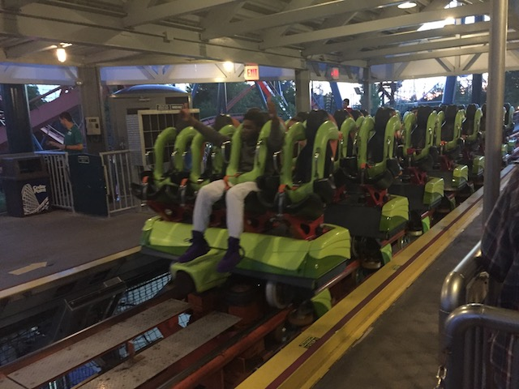
Oh yeah. It's Mantis. They just renamed it, rethemed it, and turned it into a Floorless Coaster. Same thing they did with Patriot @ CGA.
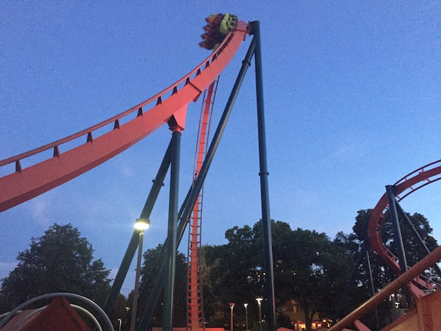
On the one hand, Rougarou is a better ride. That is definetly true. That's the upside. But the downside is that now everyone is constantly screaming with every stand up coaster "FLOORLESS IT!!!". It's like converting them to floorless coasters is the new "RMC IT!!!" with some enthusiasts. NO!!! I really like Stand Up Coasters! I want more of them to be built! Not see the current ones get demolished or turned into floorless coasters! It's not so bad now since the ones they've touched so far are the meh ones. But my god. Don't you f*cking DARE think about touching Riddlers Revenge (Thank god for Scream) or Georgia Scorcher! >=(
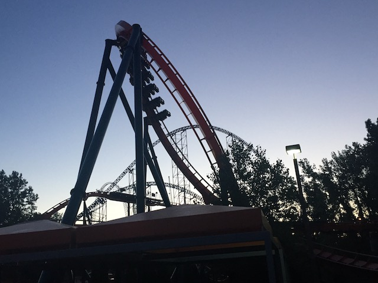
I will admit that it was cool to do an incline loop on a Floorless coaster though.
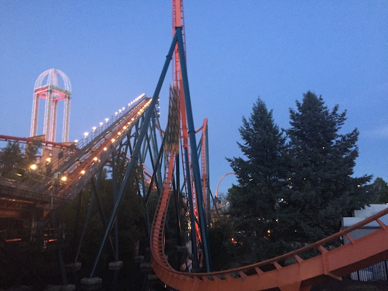
Oh yeah. We rode it in the front row, and at first, we thought it was raining on our ride. And yeah. It was raining. It just wasn't raining water. We got PELTED with insects during the ride. GAH!!! I couldn't even really enjoy the ride that much as I was preoccupied with protecting my face. Ugh. I forgot about all the bugs you have to deal with in the Midwest & South. >=(
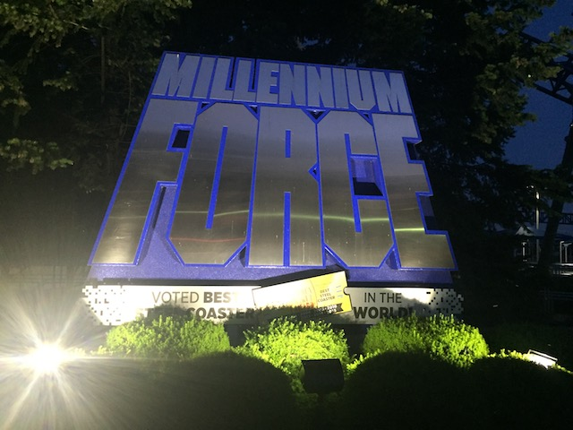
Ahh. Now, it's time for Millenium Force.
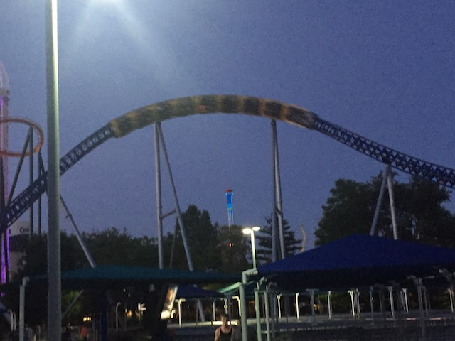
While we got a couple bugs, it wasn't NEARLY as bad as the insect shower on Rougarou.
 Happy to report that no bullsh*t and sh*tty people was here this time. =)
Happy to report that no bullsh*t and sh*tty people was here this time. =)
 Good morning everyone. I wonder where we're heading back to today?
Good morning everyone. I wonder where we're heading back to today?
Yep. We're ready for the first full rollercoaster day of the trip. =)
Yep. We did Fastlane for our full day at Cedar Point. This park gets crowded, and we don't wanna waste any time in line. Besides, we want LOTS of rides on Steel Vengeance and Maverick.
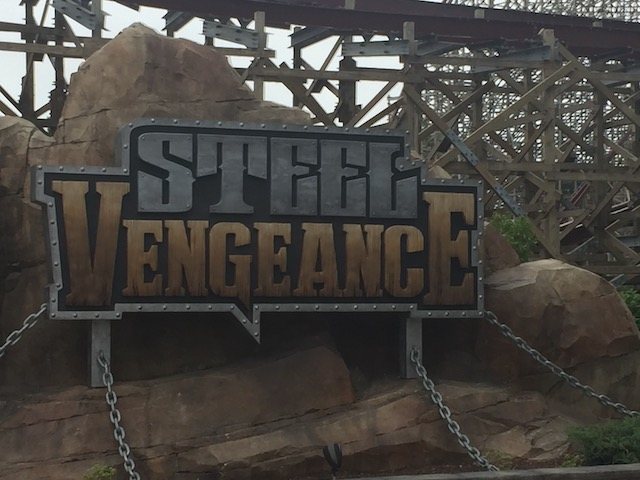
Oh yeah. Time for us to finally do the coaster that drove me out to Ohio this year.
I know we just ran here, but sadly, there are technical difficulties. That sucks, but honestly, I'm just amazed that everything went perfectly smoothly after its...incident on opening day. But Cedar Point handled that beautifully, and if the ride opened up later that day after THAT happened, then it'll surely open up later today.
 You even get airtime on those pre-lift bunny hops. =)
You even get airtime on those pre-lift bunny hops. =)
 I'm gonna go into WAY more details about Steel Vengeance later, but I'm just gonna say this for now. SO F*CKING GOOD!!!
I'm gonna go into WAY more details about Steel Vengeance later, but I'm just gonna say this for now. SO F*CKING GOOD!!!
Oh yeah. There's a story to Steel Vengeance. How many of you know it?
 Hello old friend. It's been WAY too long.
Hello old friend. It's been WAY too long.
I know Maverick recently switched from the horsecollars to the vest restraints. I never had an issue with them (then again, I rode it opening year). But hey. I support this change.
 Still just as good as when I first rode it.
Still just as good as when I first rode it.
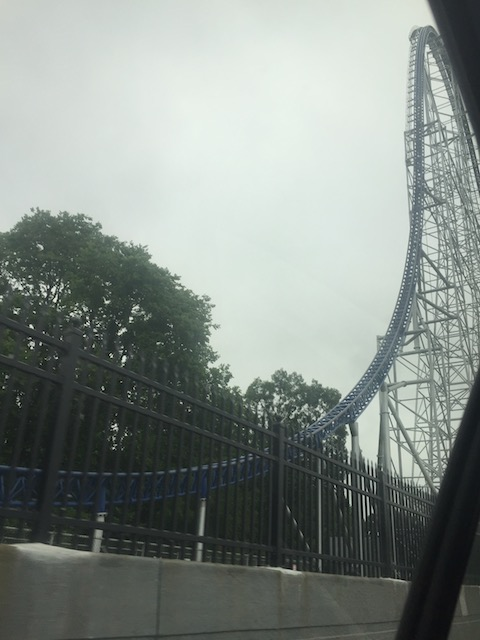
Let's head over to Millenium Force. =)
 Mild Floater Air!
Mild Floater Air!
More excitement bitches!
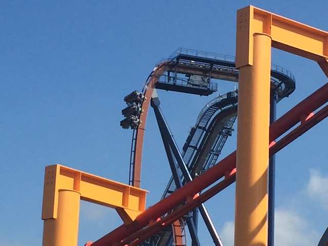
Another person in the group also hadn't been to Cedar Point in many years, so like me yesterday, she needed her Valravn credit. So yeah. We're back here.
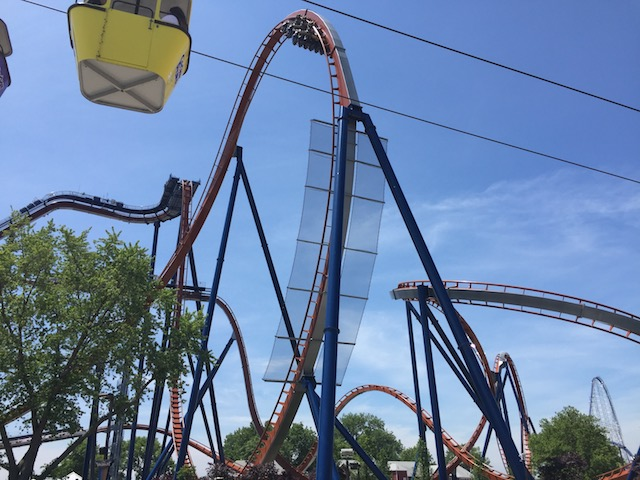
I know this ride doesn't have the cool theming Sheikra does, but it's still a great view from the top.
 If you enjoy inversions on your Dive Machines, then you're really gonna enjoy Valravn.
If you enjoy inversions on your Dive Machines, then you're really gonna enjoy Valravn.
 Ooh! Floatiness!
Ooh! Floatiness!
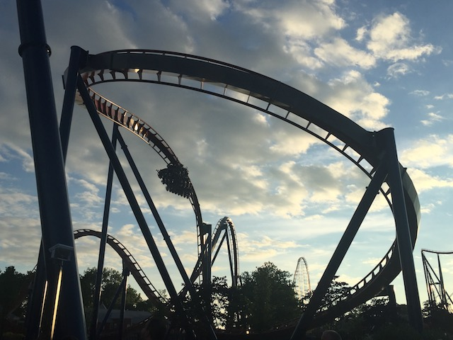
Far from the best coaster at Cedar Point, but these Dive Machines still are a lot of fun.
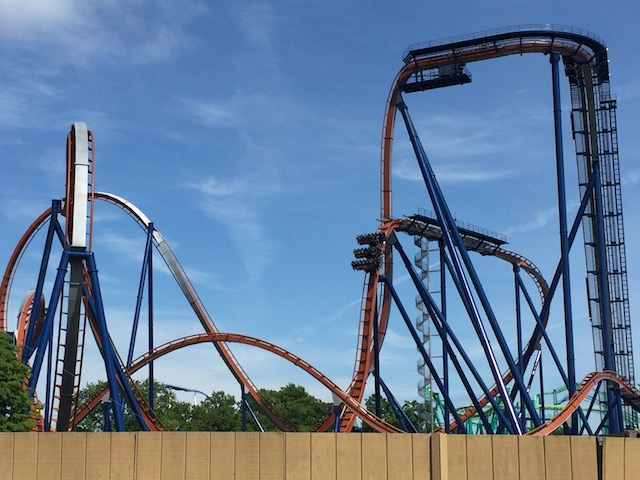
SECOND VERTICAL DROP!!!!
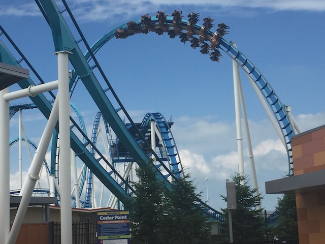
Apparently, people like to sh*t on Gatekeeper. Hey, I like it. It's fun. Sure, it's far from amazing. Not anywhere close to being the best coaster ever, there are so many better coasters, but it's fun. There's nothing wrong with it.
 See, look. Fun airtime hill! Wee! Airtime (Barely)!
See, look. Fun airtime hill! Wee! Airtime (Barely)!
 Dear Dollywood and Gardaland, please pay attention to the newer B&M Wingriders, and fix the restraint tightening on both Wild Eagle and Raptor! Please do so ASAP! Thank you.
Dear Dollywood and Gardaland, please pay attention to the newer B&M Wingriders, and fix the restraint tightening on both Wild Eagle and Raptor! Please do so ASAP! Thank you.
 We ate here for lunch. I was impressed that they actually gave me my meal for free because mine was delayed for so long. I know I complain about bad operations, and those apply to resteraunts as well. But them compensating my meal for the delay really shows that they care. Plus, a 10 minute delay is worth a $10 lunch.
We ate here for lunch. I was impressed that they actually gave me my meal for free because mine was delayed for so long. I know I complain about bad operations, and those apply to resteraunts as well. But them compensating my meal for the delay really shows that they care. Plus, a 10 minute delay is worth a $10 lunch.
 You are no longer welcome in Alaska. >=(
You are no longer welcome in Alaska. >=(
Love the Millenium Force artwork.
I'm sure you all know that I'm no fan of the Windseekers. But the sheer fact that it's got a great view of all the rides at Cedar Point, as well as Lake Erie, EASILY makes this the best of the 3 Windseekers I've done.
 Best merry go round ever. It's not even close.
Best merry go round ever. It's not even close.
 Oh yeah. We kind of forgot about you Iron Dragon.
Oh yeah. We kind of forgot about you Iron Dragon.
 I know that it's the worst of its kind, and it has a crappy layout. But it's still an Arrow Suspended, which are really rare nowadays (Why did they remove all the ones I didn't get to ride, and looked really cool). So it's still worth checking out.
I know that it's the worst of its kind, and it has a crappy layout. But it's still an Arrow Suspended, which are really rare nowadays (Why did they remove all the ones I didn't get to ride, and looked really cool). So it's still worth checking out.
 We have fastpass, and none of us had done it before. Screw it! Let's check out Power Tower!
We have fastpass, and none of us had done it before. Screw it! Let's check out Power Tower!
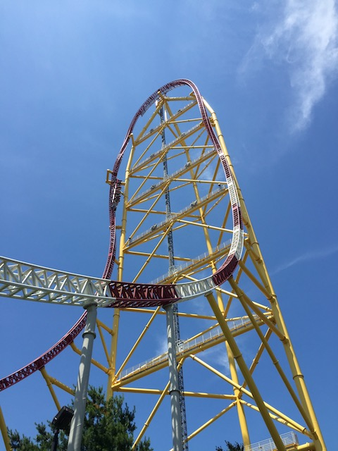
I know that it's only 17 seconds, but damn it! It's a really fun 17 seconds! I know that the rides in Frontiertown are much better, but I really like Top Thrill Dragster. =)
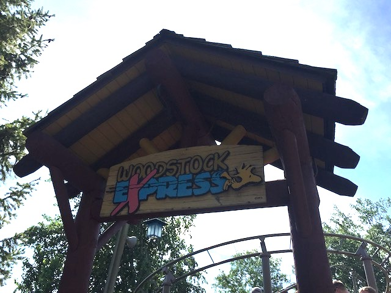
Oh yeah. There still is ONE more credit for me left at Cedar Point (Technically 2, but one requires a kid, and I may be a credit whore, but even I draw the line there).
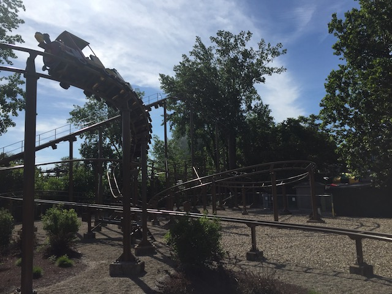
You know, those giant Roller Skaters are actually fun. I'd probably ride more often if it wasn't in the kids area.
A week before the trip, I learned that Cedar Point had a special event going on, called "Brew & BBQ". So yeah. We naturally had to do it.
So many different BBQ foods to try. Looking foreward to going through as many as possible.
I have to highly recommend the Loaded Mac & Cheese with pulled pork and bacon. Mac & Cheese is great already, throw in bacon & pork, it's fantastic. Oh, and the wet Smokehouse Ribs with Chili Pecan are also fantastic. Of all the BBQ stuff I tried, these two were easily my favorites.
Dude! I've been seeing cotton flying everywhere at Cedar Point. It kept sailing in front of us at the Top Thrill Dragster station, and here, it just collects. I think some of it even got in my beer. That was annoying.
Damn you money! And damn you alcohol poisoning! If it weren't for the two of you, I'd drink all the beers! Now I have to actually choose which ones I want!
I went with the Blackberry Shandy, since yeah. I really like ciders. And yeah. It was fantastic. I assume you could get it in stores. I'd like that.
 Boy! Six Flags certainly has improved since my last visit! Wait a minute. Something is not right here.
Boy! Six Flags certainly has improved since my last visit! Wait a minute. Something is not right here.
And of course, being a coaster enthusiast, I had to try the coaster beers. Because I'm a nerd like that! Plus, they're only at Cedar Point for a limited time. So first off, the Rougabrew. It was very good. Fairly mild, pretty malty, and was the kind of beer I'd sip while relaxing. Kind of reminded of something I'd order in Germany. So yeah. Rougarou, it's got a great beer.
And finally, we have the Valravn beer. It was all right. It had a good flavor, but it was more hoppy. Good, but not my favorite. So yeah. Valravn may be the better coaster, but Rougarou has the better beer.
 We've been relaxing, eating BBQ, and drinking beer, having a great time. Let's make this even better and throw in some Steel Vengeance.
We've been relaxing, eating BBQ, and drinking beer, having a great time. Let's make this even better and throw in some Steel Vengeance.
We even got dessert with these peaches and cream. It was good and all, well except for one problem. The cream also contained milk. Fine when actually eating it. But...milk has a terrible aftertaste. The good taste of fruit is gone, and that just leaves this gross aftertaste. It's bad to the point that I avoid cereal just so I don't get that aftertaste. Please tell me I'm not the only person who deals with that.
Steel Vengeance. It's so good, that even the model of the ride fills me with joy.
Get the f*ck out of the way! You were a sh*tty coaster torn down to make way for one of the greatest coasters in the world!
Nice Valravn statue you got in that museum.
"Can we have more time on Gemini please?"
Screaming Swings are still always fun.
 You know, I expected a bigger splash. I guess I'm just spoiled.
You know, I expected a bigger splash. I guess I'm just spoiled.
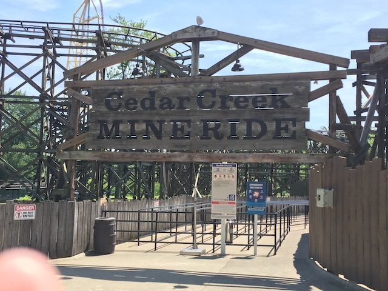
I think this might be the only ride in the park we haven't done. So...yeah.
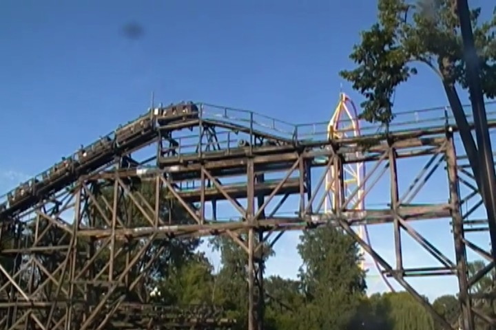
I know this may sound silly to say, but Cedar Creek Mine Ride isn't as good as it was back in 2007. I know it's just a mine train. But I initially thought it was on par with Goldrusher. But this time, it just felt slower and didn't have as much to it. Though I guess its a good thing that the biggest dissapointment of the trip was Cedar Creek Mine Ride.
 It's so amazing that we just have these two amazing coasters, some of the best in the world, right next to each other. I never want to leave this section of Cedar Point.
It's so amazing that we just have these two amazing coasters, some of the best in the world, right next to each other. I never want to leave this section of Cedar Point.
 EJECTOR AIR!!!
EJECTOR AIR!!!
 Maverick at sunset. So beautiful.
Maverick at sunset. So beautiful.
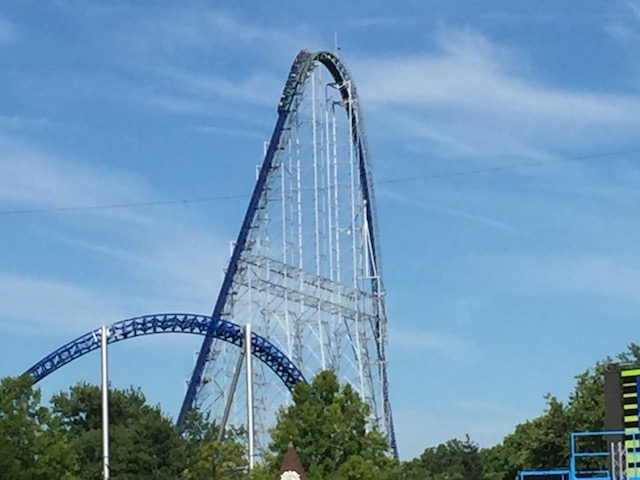
Hey. Millenium Force is open early for Platinum Pass holders. Let's check that out.
 You know, over the years, there's been a major backlash to years of people screaming that "MILLENIUM FORCE IS THE BEST RIDE EVER!!!", where people talk about how Millenium Force is overrated and trash talk the ride. And yeah. I admit that I don't think that the ride is amazing. I found Millenium Force overrated, and I trash talked the ride (Just go back and listen to me bash the lack of airtime). But the backlash has gotten so strong that I feel like I have to come out and reaffirm that despite me thinking that it's overrated and not the best ride ever, I do like Millenium Force. It is a very fun coaster, it has some great speed, and even a little bit of airtime. It's just mild airtime. That's all.
You know, over the years, there's been a major backlash to years of people screaming that "MILLENIUM FORCE IS THE BEST RIDE EVER!!!", where people talk about how Millenium Force is overrated and trash talk the ride. And yeah. I admit that I don't think that the ride is amazing. I found Millenium Force overrated, and I trash talked the ride (Just go back and listen to me bash the lack of airtime). But the backlash has gotten so strong that I feel like I have to come out and reaffirm that despite me thinking that it's overrated and not the best ride ever, I do like Millenium Force. It is a very fun coaster, it has some great speed, and even a little bit of airtime. It's just mild airtime. That's all.
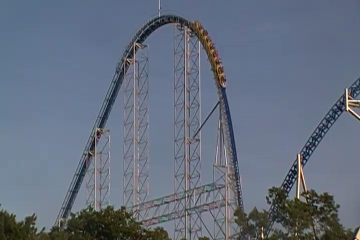
And of course, that first drop is still really freaking great.
 All right. Time for us to get in line and get another ride in on Steel Vengeance. And now it's the time to really go into the details of this amazing amazing ride.
All right. Time for us to get in line and get another ride in on Steel Vengeance. And now it's the time to really go into the details of this amazing amazing ride.
I know we got at opening and waited 45 minutes, but we got out, and I think the line grew to 3 hours (This is why we got FastLane yesterday)! Oh, and cool haunt maze in the line.
 Hello lucky employee safety riding Steel Vengeance.
Hello lucky employee safety riding Steel Vengeance.
Hey look! I found a random credit card! I can now save myself some money on this trip! =P
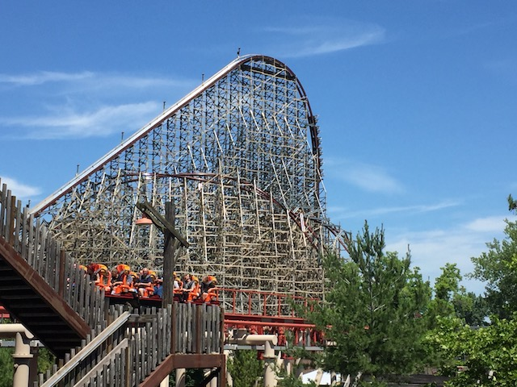
I know I go into more details in my just-published Steel Vengeance Review (Seriously, go check out my Cedar Point review. I added reviews for all the new coasters, and I updated all the photos and information). But let me say this. Imagine that Twisted Collosus and Iron Rattler had a baby. Then you injected that baby with steroids, made it snort a line of coke, added a splash of crazy, and gave it a hunger for rape. That's Steel Vengeance for you.
 You're not allowed if you're wearing a hat. Cause as we all know, hats are from the devil. But feel free to go in the restricted area, provided you're not wearing a F*CKING HAT!!!
You're not allowed if you're wearing a hat. Cause as we all know, hats are from the devil. But feel free to go in the restricted area, provided you're not wearing a F*CKING HAT!!!
 You are out of your seat the entire time on that first drop. It's like all the other amazing RMC first drops. Except this one is also a hyper coaster drop as well. So yeah. Amazing.
You are out of your seat the entire time on that first drop. It's like all the other amazing RMC first drops. Except this one is also a hyper coaster drop as well. So yeah. Amazing.
 I know the inversions on Steel Vengeance are crazy and all, but a quick peice of rider etiquette. Please don't elbow the person next to you while on the ride. Thank you. ;)
I know the inversions on Steel Vengeance are crazy and all, but a quick peice of rider etiquette. Please don't elbow the person next to you while on the ride. Thank you. ;)
 And those bunny hops at the end. HOLY SH*T!!! Those things have some of the most INSANE ejector air ever! This is damn near Rolling Thunder Hill ejector air!
And those bunny hops at the end. HOLY SH*T!!! Those things have some of the most INSANE ejector air ever! This is damn near Rolling Thunder Hill ejector air!
 It is just so mean, so brutal, so intense, and so aggressive. It's really one of the best coasters in the world. It's not just a Top 10 Coaster. It's a Top 5 Coaster. It's so good, it's right next to Maverick in ranking (Honestly, I think I rank Steel Vengeance above Maverick. And considering how much I LOVE Maverick, that's really saying something). I keep going back and forth as to whether this or Outlaw Run is my favorite RMC. It's just so amazing. I'm so glad I came out to ride this monster.
It is just so mean, so brutal, so intense, and so aggressive. It's really one of the best coasters in the world. It's not just a Top 10 Coaster. It's a Top 5 Coaster. It's so good, it's right next to Maverick in ranking (Honestly, I think I rank Steel Vengeance above Maverick. And considering how much I LOVE Maverick, that's really saying something). I keep going back and forth as to whether this or Outlaw Run is my favorite RMC. It's just so amazing. I'm so glad I came out to ride this monster.
Seriously, check out our raw footage of Steel Vengeance so you can see this beast in action!
 After just doing one Top 5 Coaster, it's so nice to just waltz a few feet and go do the other one right next door. =D
After just doing one Top 5 Coaster, it's so nice to just waltz a few feet and go do the other one right next door. =D
After Fastlane yesterday and strangely, no lines on Sunday, it feels weird waiting an hour for Maverick. But it's for one of my all time favorite coasters. So it's all right.
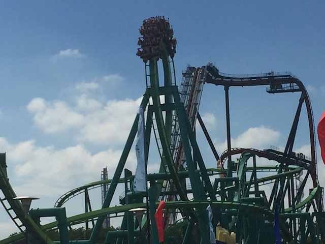
I'm down with more rides on Raptor.
 I wish they made the newer B&M Inverts intense and agressive like they did with the older ones.
I wish they made the newer B&M Inverts intense and agressive like they did with the older ones.
 And finally, let's close out this Cedar Point visit with a ride on MaxAir. It's been forever since I did a Huss Giant Frisbee, and thought I should compare it to the Zamperla ones. Honestly, they pretty much felt the same. Which is fine with me. I absolutely love them. Looking foreward to one coming to my home park this summer.
Thank you Cedar Point for another great visit. I had a blast. Steel Vengeance is unbelievable, the B&Ms you added since my last visit were fun, and I just had a blast being here. I really hope I won't have to wait another 11 years for my next Cedar Point visit again, cause this was awesome.
And finally, let's close out this Cedar Point visit with a ride on MaxAir. It's been forever since I did a Huss Giant Frisbee, and thought I should compare it to the Zamperla ones. Honestly, they pretty much felt the same. Which is fine with me. I absolutely love them. Looking foreward to one coming to my home park this summer.
Thank you Cedar Point for another great visit. I had a blast. Steel Vengeance is unbelievable, the B&Ms you added since my last visit were fun, and I just had a blast being here. I really hope I won't have to wait another 11 years for my next Cedar Point visit again, cause this was awesome.
Kentucky Kingdom
Home
|